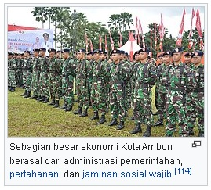

 Pada tahun 2016, Produk Domestik Regional Bruto (PDRB) Kota Ambon mencapai angka Rp12.045.480,72 juta pada 2016, setingkat dengan Negara Saint Kitts dan Nevis. Dengan demikian, Kota Ambon berkontribusi sebesar 32,5% terhadap PDRB Maluku yang jumlahnya sebesar Rp37.062.642,66 juta (AS$2.784,92 juta). Pada tahun 2016, PDRB Atas Dasar Harga Konstan (ADHK) 2010 kota bertumbuh secepat 5,98% menurut lapangan usahanya. Ekonomi kota sebagian besar ditopang oleh lapangan usaha administrasi, diikuti dengan perdagangan, lalu transportasi dan pergudangan. Jika dibidangkan dalam sektornya, ekonomi kota ditopang oleh pertanian (primer) sebesar 4,84%, industri sebesar (sekunder) 10,09%, dan jasa sebesar (tersier) 85,08%. PDRB per kapita Kota Ambon adalah Rp28,14 juta (AS$2.114,46) pada 2016, setingkat dengan Nikaragua. Meskipun pendapatan rakyatnya rendah, tingkat kemiskinan di kota sangatlah rendah. Jumlah penduduk miskin adalah 19.640 jiwa atau 4,58% dari total penduduk kota.